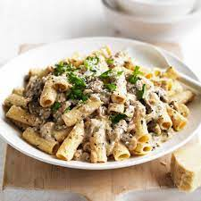

Cooking beef stroganoff always brings me back to my grandmother's cozy kitchen, where I first learned the magic behind this beloved dish. It was on a chilly autumn evening when she decided it was time for me to master the family recipe. We started by tenderly browning the beef, its sizzling sound creating a warm, inviting atmosphere that contrasted with the cold outside. The moment we stirred in the sour cream, transforming the concoction into a creamy, luxurious sauce, was when I truly fell in love with the art of cooking. Each step, from seasoning the meat to watching the sauce thicken, felt like a rite of passage. Now, whenever I prepare beef stroganoff, I'm transported back to that evening, apron tied and spoon in hand, standing next to my grandmother. It's not just a meal; it's a cherished memory, a tradition that I hope to pass down through generations, just as it was passed down to me.
Ingredients
- One package of noodles(I prefer rigatoni)
- 1 can of mushroom soup
- 1 packet of lipton onion soup mix
- 1 cup of sour cream
- 1 cup of milk
- 1lb of beef (I use either stew meat or tenderized chunks from the butcher)
Directions
- Brown beef until some pink is still left.
- Pour package of onion soup mix over beef and stir.
- Boil noodles per directions.
- Add soup, milk and sour cream to beef.
- Stir and simmer until noodles are cooked.
- Add beef mixture to pot of drained cooked noodles.
- Mix well and enjoy!